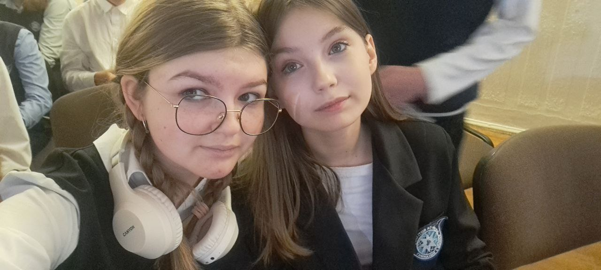
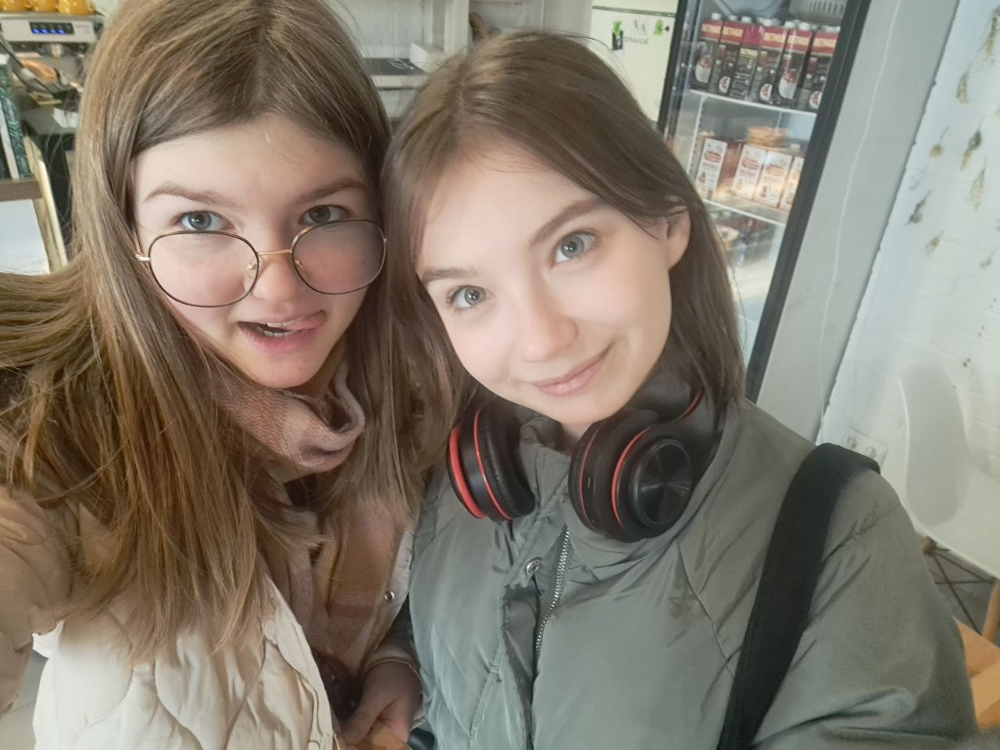
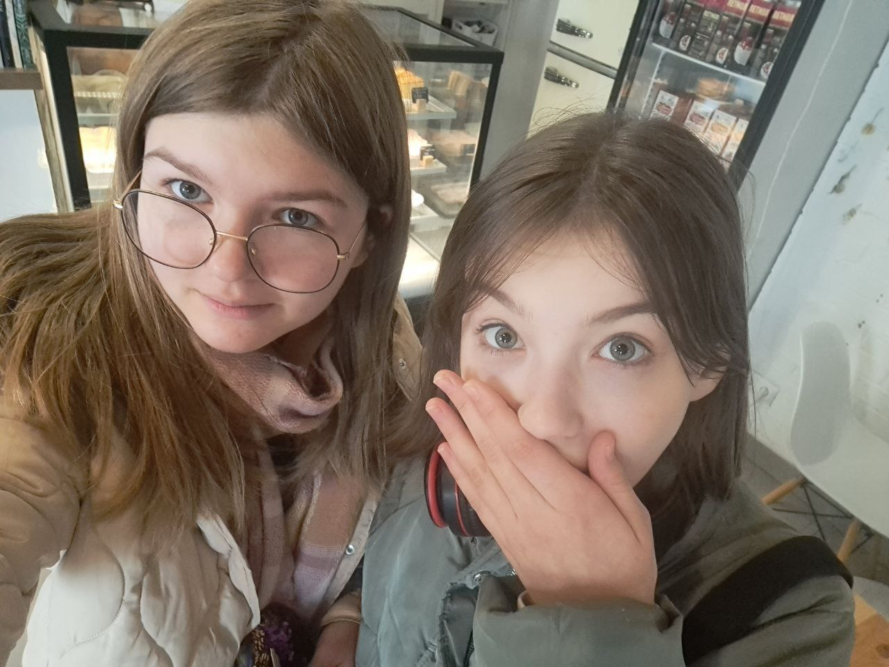

Соня и Кристина — такие подруги, с которыми скучно просто не бывает. Они всегда находят повод посмеяться, даже если мир вокруг серьёзен.
Соня — любит говорить о книгах, новых сериалах и обсуждать что-нибудь необычное.
Кристина — настоящая искорка, которая неожиданно выкрикнет шутку, от которой все падают со смеху.
Почему они крутые?
- Соня умная, а Кристина смешная
- Кристина иногда хрюкает от смеха
- Сонина фраза "Влад, ты дебил?" — классика
- Обе красавицы
- Настоящие друзья
- Ну и вообще красавы!